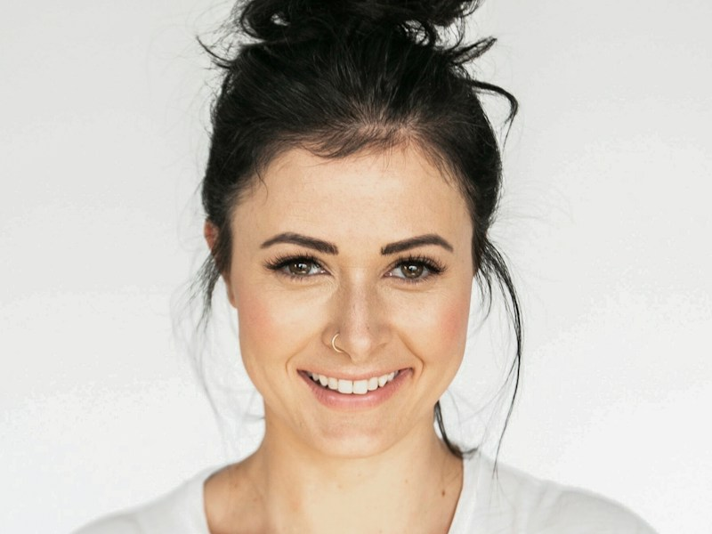

Вечерний эфир
Панель модератора · Ограниченный доступ к комнате
Модератор

ПодключёнКастер
Анна СмирноваКамера · 1920 × 1080
Микрофон
−18 dB
Участники комнаты
4 подключены| Участник | Роль | Связь | |
|---|---|---|---|
| Анна Смирнова | Кастер | В сети | |
| Максим Иванов | Кастер | В сети | |
| Алексей Котов | Кастер | В сети |